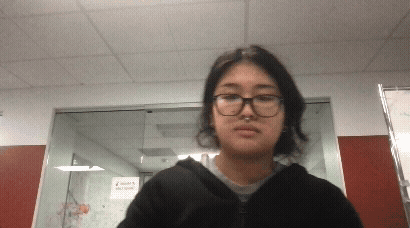

Python
OpenCV
Mediapipe
Scikit-learn
Dense Neural Networks
Overview
This project explores how computer vision can be used to create a real-time, gesture-controlled music interface. Inspired by gesture-based musical systems like Imogen Heap’s Mi.Mu gloves, we built a simplified system that recognizes hand gestures for numbers 0 through 5 and maps them to musical outputs in real time. The goal was to make musical interaction more intuitive and accessible by allowing users to trigger sounds through hand movement instead of a traditional instrument or controller.
The final system uses a webcam to detect a user’s hand, classify the gesture being shown, and play a corresponding musical chord. Gestures 1 through 5 were mapped to C major, D minor, A minor, F major, and G minor, respectively. The project serves as a proof of concept for combining computer vision, machine learning, and audio generation into an interactive creative tool.
Technical Details
The pipeline was split into two main stages: hand landmark extraction and gesture classification. Instead of training directly on raw images, we used MediaPipe to detect 21 hand landmarks corresponding to key points such as the wrist, fingertips, and finger joints. This allowed the model to focus on the geometry of the hand rather than background, lighting, or camera differences.
From the MediaPipe landmarks, we constructed a 72-feature input vector. This included the 3D coordinates of the 21 landmarks, plus additional hand-engineered features such as fingertip distances and finger-extension measurements. These features were normalized so that the model would be less sensitive to hand size or distance from the camera.
For classification, we used a Multi-Layer Perceptron (MLP), a dense neural network well-suited for structured geometric data. The model predicted one of six gesture classes corresponding to finger counts from 0 to 5. During real-time use, webcam frames were processed continuously with OpenCV, landmarks were extracted with MediaPipe, the MLP predicted the gesture class, and the predicted class was mapped to a chord using PyAudio.
A major part of the project involved dataset experimentation. We first tested a large grayscale fingers dataset, which was useful for prototyping but too standardized to generalize well. We then tried a smaller RGB counting-fingers dataset, which had more natural variation but too few images per class. Finally, we identified HaGRID as a stronger future dataset because it contains a much larger and more diverse set of hand gestures, backgrounds, lighting conditions, and users.
Results
The project successfully demonstrated an end-to-end real-time gesture-to-music system. The model could recognize finger-count gestures from webcam input and trigger corresponding chords while the gesture remained visible. This confirmed that a modular pipeline using MediaPipe, an MLP classifier, OpenCV, and PyAudio can support interactive gesture-based musical control. To evaluate the classifier, we used both a confusion matrix on static images and a manually labeled video test. The confusion matrix showed that the model could correctly classify several gestures, but it also confused visually similar finger-count poses, especially when trained on the small RGB dataset. For video evaluation, we manually labeled 327 frames and compared the model’s predictions frame-by-frame. The classifier achieved about 65% accuracy, which was stronger than expected given the limited training data, real-world lighting variation, and transitional hand movements between gestures. The biggest takeaway was that dataset quality mattered more than model complexity. The MLP architecture was appropriate for landmark-based classification, but the system’s reliability was limited by the size and diversity of the training data. With fuller integration of HaGRID and more gesture examples, the system could become much more robust and expressive. Future extensions could include more gesture classes, volume control, tone modulation, or a larger musical vocabulary beyond the five mapped chords.
More information can be found in our report.
T r y i t !
